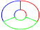
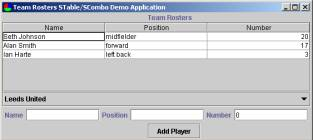

Use the SComboBox to select teams.
The player roster for the selected team is displayed in the STable.
Add a player to the roster by entering data into the STextFields at
the bottom of the screen and pressing the “Add Player” SButton.
The player roster for the selected team is displayed in the STable.
Add a player to the roster by entering data into the STextFields at
the bottom of the screen and pressing the “Add Player” SButton.

